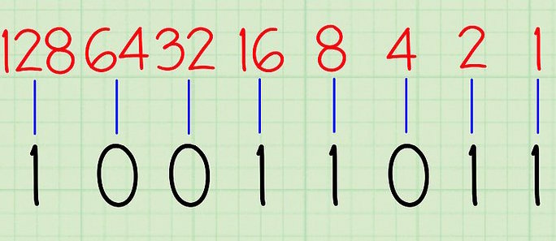

Heim
Fargar
Bilde
Det Binære Tallsystemet: Det binære tallsystemet, eller tottallsystemet er basert på to tall, 0 og 1. Desse tala har kvar sin funksjon, 0 er strøm av, og 1 er strøm på. Dette er måten datamaskina tenker. Over kan du sjå eit bilde med ein binær kode nederst på bildet, og øverst på bildet kan du sjå kva kvart tall representer i titalssystemet. Plusser du alle tala saman der får du kva heile binære tallet er i titallsystemet. 10011011 i det binære tallsystemet er 155 i titallsystemet. Med 8 binære siffer har ein 256 ulike val. 8 bit kallar ein ein byte, og det er ofte byte ein brukar når ein snakkar om
